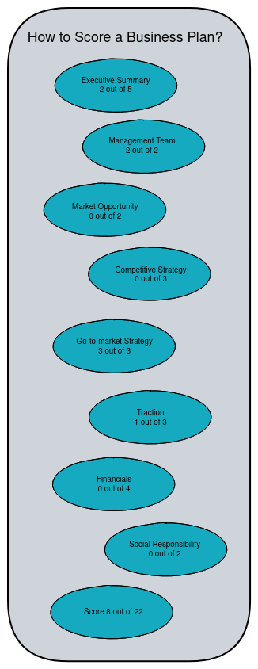
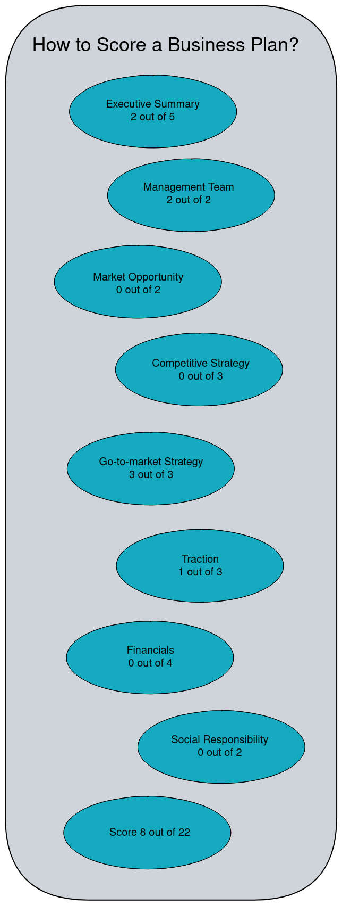

How to Score a Business Plan
A Business Plan is a short page of text. I will send via text tomorrow and you will return a number between 0 and 24.
 
1. Overall Impression of the Executive Summary
- Does the summary adequately describe the idea — does the idea make sense?
- Has the team adequately described the pain in the marketplace?
- Do you believe the team has presented a feasible solution?
- Is the summary well written and succinct?
- Does the summary create excitement?
2. Management team
- Does this management team have the skills required to execute the plan?
- Does this team have the experience to lead a new venture?
3. Market opportunity
- Have they adequately described the market and economic opportunity?
- Have they clearly stated their value proposition? Is it a viable model?
4. Competitive Strategy
- Has the team completely analyzed its competitive space?
- Does the summary clearly identify the company’s initial competitive advantage or differentiator?
- Does the team have an adequate strategy for defending their market position?
5. Go-to-market Strategy
- Is it clear how the company will reach its initial customer?
- Does the summary clearly identify a sales strategy?
- Is the distribution plan clearly defined and reasonable?
6. Traction
- Has the team made progress toward any milestones (licenses, patents, etc…)
- Has the company signed customers and/or channel partners?
- Has the company booked any revenue?
7. Financials
- Are the financials consistent with the overall plan?
- Are the assumptions realistic?
- Are contingencies and exit strategies addressed?
- Does the plan describe the funding/resources required to execute on the plan?
8. Social Responsibility
- Does the entry have the potential to make a significant positive impact on society? Will it improve the quality of life for people and our planet and help contribute to a better, safer and more prosperous world?
- Does the team discuss measurable efforts to minimize consumption, use, and byproduct waste, while bolstering profitability/cost containment?
9. Exam For 'Business Plan Judge Certificate'
Question 1: Business Plan A is 52233342 and Business Plan B is 02233340. Can you score each one?
Answer: Business Plan A score is 24 (5+2+2+3+3+3+4+2) and Plan B score is 17 (5+2+2+3+3+3+4+2).
Question 2: What is the highest score Business Plan cat get?
Answer: 24
Question 3: Business Plan A is missing Social Responsibility. What is the highest score Business Plan A can get?
Answer: 22. If Social Responsibility missing, the Business Plan lost 2 scores.
If you answered correctly and you understand it, congratulations! You are a Business Plan Judge. Your first competition is Dempsey Startup Competition.